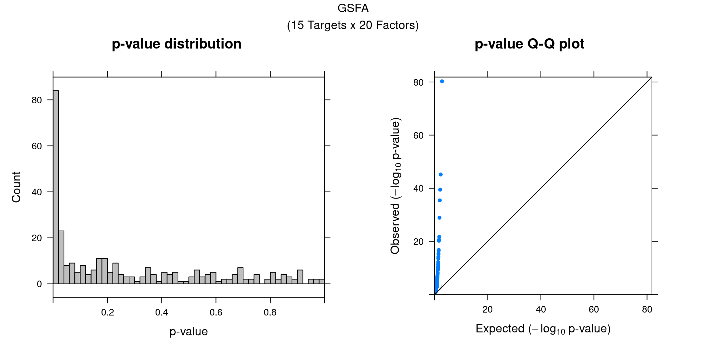

Interpretation of GSFA Results on LUHMES CROP-seq Data
-- for manuscript
Yifan Zhou (zhouyf@uchicago.edu)
1 Introduction
This tutorial demonstrates how to visualize and interpret the results from a GSFA run.
We have described how to run GSFA on LUHMES CROP-seq data from Lalli et al. here.
To recapitulate, the processed dataset consists of 8708 neural progenitor cells that belong to one of the 15 perturbation conditions (CRISPR knock-down of 14 neurodevelopmental genes, and negative control). Top 6000 genes ranked by deviance statistics were kept. And GSFA was performed on the data with 20 factors specified.
1.1 Load necessary packages and data
library(data.table)
library(Matrix)
library(tidyverse)
library(ggplot2)
theme_set(theme_bw() + theme(plot.title = element_text(size = 14, hjust = 0.5),
axis.title = element_text(size = 14),
axis.text = element_text(size = 12),
legend.title = element_text(size = 13),
legend.text = element_text(size = 12),
panel.grid.minor = element_blank())
)
library(gridExtra)
library(ComplexHeatmap)
library(kableExtra)
library(WebGestaltR)
source("../R/plotting_functions.R")
data_folder <- "../data/LUHMES/"The first thing we need is the output of GSFA fit_gsfa_multivar() run. The lighter version containing just the posterior mean estimates and LFSR of perturbation-gene effects is enough. (See R/run_gsfa_LUHMES.R for more GSFA run details.)
fit <- readRDS(paste0(data_folder, "gsfa_fit.light.rds"))
gibbs_PM <- fit$posterior_means
lfsr_mat <- fit$lfsr[, -ncol(fit$lfsr)]
KO_names <- colnames(lfsr_mat)We also need the cell by perturbation matrix which was used as input \(G\) for GSFA.
G_mat <- readRDS(paste0(data_folder, "perturbation_matrix.rds"))Finally, we load the mapping from gene name to ENSEMBL ID for all 6k genes used in GSFA, as well as selected neuronal marker genes. This is specific to this study and analysis.
genes_df <- readRDS(paste0(data_folder, "top6k_genes.rds"))
interest_df <- readRDS(paste0(data_folder, "selected_neuronal_markers.rds"))2 Factor ~ Perturbation Association
2.1 Perturbation effects on factors
Fisrt of all, we look at the estimated effects of gene perturbations on factors inferred by GSFA.
We found that targeting of 7 genes, ADNP, ARID1B, ASH1L, CHD2, DYRK1A, PTEN, and SETD5, has significant effects (PIP > 0.95) on at least 1 of the 20 inferred factors.
All targets and factors (Figure S6A):
dotplot_beta_PIP(t(gibbs_PM$Gamma_pm), t(gibbs_PM$beta_pm),
marker_names = KO_names,
reorder_markers = c(KO_names[KO_names!="Nontargeting"], "Nontargeting"),
inverse_factors = F) +
coord_flip()
## Similar visualization using GSFA built-in functions:
GSFA::dotplot_beta_PIP(fit,
target_names = KO_names,
reorder_targets = c(KO_names[KO_names!="Nontargeting"], "Nontargeting"))Here is a closer look at the estimated effects of selected perturbations on selected factors (Figure 5A):
targets <- c("ADNP", "ARID1B", "ASH1L", "CHD2", "DYRK1A", "PTEN", "SETD5")
complexplot_perturbation_factor(gibbs_PM$Gamma_pm[-nrow(gibbs_PM$Gamma_pm), ],
gibbs_PM$beta_pm[-nrow(gibbs_PM$beta_pm), ],
marker_names = KO_names,
reorder_markers = targets,
reorder_factors = c(4, 9, 16))
## Similar visualization using GSFA built-in functions:
GSFA::dotplot_beta_PIP(fit,
target_names = KO_names,
reorder_targets = targets, reorder_factors = c(4, 9, 16))2.2 Factor-perturbation association p values
We can also assess the correlations between each pair of perturbation and inferred factor.
The distribution of correlation p values show significant signals.
gibbs_res_tb <- make_gibbs_res_tb(gibbs_PM, G_mat, compute_pve = F)
heatmap_matrix <- gibbs_res_tb %>% select(starts_with("pval"))
rownames(heatmap_matrix) <- 1:nrow(heatmap_matrix)
colnames(heatmap_matrix) <- colnames(G_mat)
summ_pvalues(unlist(heatmap_matrix),
title_text = "GSFA\n(15 Targets x 20 Factors)")3 Factor Interpretation
3.1 Correlation within factors
Since the GSFA model does not enforce orthogonality among factors, we first inspect the pairwise correlation within them to see if there is any redundancy. As we can see below, the inferred factors are mostly independent of each other.
plot_pairwise.corr_heatmap(input_mat_1 = gibbs_PM$Z_pm,
corr_type = "pearson",
name_1 = "Pairwise correlation within factors (Z)",
label_size = 10)
plot_pairwise.corr_heatmap(input_mat_1 = (gibbs_PM$F_pm > 0.95) * 1,
corr_type = "jaccard",
name_1 = "Pairwise correlation within \nbinarized gene loadings (F_pm > 0.95)",
label_size = 10)
3.2 Gene loading in factors
To understand these latent factors, we inspect the loadings (weights) of several marker genes for neuron maturation and differentiation in them.
| gene_name | type | protein_name | gene_ID |
|---|---|---|---|
| TP53 | Cell proliferation | Tumor protein p53 | ENSG00000141510 |
| CDK4 | Cell proliferation | Cyclin dependent kinase 4 | ENSG00000135446 |
| NES | Neural progenitor cell | Nestin | ENSG00000132688 |
| STMN2 | Mature neuron | Stathmin-2 | ENSG00000104435 |
| MAP2 | Mature neuron | Microtubule associated protein 2 | ENSG00000078018 |
| DPYSL3 | Mature neuron | Dihydropyrimidinase like 3 | ENSG00000113657 |
| MAP1B | Mature neuron | Microtubule associated protein 1B | ENSG00000131711 |
| CRABP2 | Mature neuron | Cellular retinoic acid binding protein 2 | ENSG00000143320 |
| NEFL | Mature neuron | Neurofilament Light Chain | ENSG00000277586 |
| ZEB2 | Mature neuron | Zinc finger E-box binding homeobox 2 | ENSG00000169554 |
| ITM2C | Negative regulation of neuron projection | Integral membrane protein 2C | ENSG00000135916 |
| CNTN2 | Negative regulation of neuron projection | Contactin-2 | ENSG00000184144 |
| DRAXIN | Negative regulation of neuron projection | Dorsal inhibitory axon guidance protein | ENSG00000162490 |
| HDAC2 | Negative regulation of neuron projection | Histone deacetylase 2 | ENSG00000196591 |
We visualize both the gene PIPs (dot size) and gene weights (dot color) in all factors (Figure S6B):
complexplot_gene_factor(genes_df, interest_df, gibbs_PM$F_pm, gibbs_PM$W_pm)
A closer look at some factors that are associated with perturbations (Figure 5C):
complexplot_gene_factor(genes_df, interest_df, gibbs_PM$F_pm, gibbs_PM$W_pm,
reorder_factors = c(4, 9, 16))
3.3 GO enrichment analysis in factors
To further characterize these latent factors, we perform GO (gene ontology) enrichment analysis of genes loaded on the factors using WebGestalt.
Foreground genes: genes w/ non-zero loadings in each factor (gene PIP > 0.95);
Background genes: all 6000 genes used in GSFA;
Statistical test: hypergeometric test (over-representation test);
Gene sets: GO Slim "Biological Process" (non-redundant).
## The "WebGestaltR" tool needs Internet connection.
enrich_db <- "geneontology_Biological_Process_noRedundant"
PIP_mat <- gibbs_PM$F_pm
enrich_res_by_factor <- list()
for (i in 1:ncol(PIP_mat)){
enrich_res_by_factor[[i]] <-
WebGestaltR::WebGestaltR(enrichMethod = "ORA",
organism = "hsapiens",
enrichDatabase = enrich_db,
interestGene = genes_df[PIP_mat[, i] > 0.05, ]$ID,
interestGeneType = "ensembl_gene_id",
referenceGene = genes_df$ID,
referenceGeneType = "ensembl_gene_id",
isOutput = F)
}Several GO “biological process” terms related to neuronal development are enriched in factors 4, 9, and 16 (Figure 5D):
factor_indx <- 4
terms_of_interest <- c("regulation of ion transmembrane transport",
"regulation of trans-synaptic signaling",
"axon development",
"regulation of neuron projection development")
barplot_top_enrich_terms(enrich_res_by_factor[[factor_indx]],
terms_of_interest = terms_of_interest,
str_wrap_length = 35, pval_max = 8, FC_max = 6) +
labs(title = paste0("Factor ", factor_indx),
x = "Fold of enrichment")
factor_indx <- 9
terms_of_interest <- c("actin filament organization",
"cell fate commitment",
"regulation of neuron projection development",
"regulation of cell morphogenesis")
barplot_top_enrich_terms(enrich_res_by_factor[[factor_indx]],
terms_of_interest = terms_of_interest,
str_wrap_length = 35, pval_max = 8, FC_max = 6) +
labs(title = paste0("Factor ", factor_indx),
x = "Fold of enrichment")
factor_indx <- 16
terms_of_interest <- c("developmental growth involved in morphogenesis",
"axon development")
barplot_top_enrich_terms(enrich_res_by_factor[[factor_indx]],
terms_of_interest = terms_of_interest,
str_wrap_length = 35, pval_max = 8, FC_max = 6) +
labs(title = paste0("Factor ", factor_indx),
x = "Fold of enrichment")
4 DEG Interpretation
In GSFA, differential expression analysis can be performed based on the LFSR method. Here we evaluate the specific downstream genes affected by the perturbations detected by GSFA.
We also performed several other differential expression methods for comparison, including scMAGeCK-LR, MAST, and DESeq.
4.1 Number of DEGs detected by different methods
fdr_cutoff <- 0.05
lfsr_cutoff <- 0.05| KO | ADNP | ARID1B | ASH1L | CHD2 | CHD8 |
| Num_genes | 790 | 345 | 341 | 773 | 0 |
| KO | CTNND2 | DYRK1A | HDAC5 | MECP2 | MYT1L |
| Num_genes | 0 | 111 | 0 | 0 | 0 |
| KO | Nontargeting | POGZ | PTEN | RELN | SETD5 |
| Num_genes | 0 | 0 | 898 | 0 | 389 |
deseq_list <- readRDS(paste0(data_folder, "DE_result_DESeq2.rds"))
deseq_signif_counts <- sapply(deseq_list, function(x){filter(x, FDR < fdr_cutoff) %>% nrow()})mast_list <- readRDS(paste0(data_folder, "DE_result_MAST.rds"))
mast_signif_counts <- sapply(mast_list, function(x){filter(x, FDR < fdr_cutoff) %>% nrow()})scmageck_res <- readRDS(paste0(data_folder, "DE_result_scMAGeCK.rds"))
colnames(scmageck_res$fdr)[colnames(scmageck_res$fdr) == "NegCtrl"] <- "Nontargeting"
scmageck_signif_counts <- colSums(scmageck_res$fdr[, KO_names] < fdr_cutoff)dge_comparison_df <- data.frame(Perturbation = names(lfsr_signif_num),
GSFA = lfsr_signif_num,
scMAGeCK = scmageck_signif_counts,
DESeq2 = deseq_signif_counts,
MAST = mast_signif_counts)
dge_comparison_df$Perturbation[dge_comparison_df$Perturbation == "Nontargeting"] <- "NegCtrl"Number of DEGs detected under each perturbation using 4 different methods (Figure 5E):
dge_plot_df <- reshape2::melt(dge_comparison_df, id.var = "Perturbation",
variable.name = "Method", value.name = "Num_DEGs")
dge_plot_df$Perturbation <- factor(dge_plot_df$Perturbation,
levels = c("NegCtrl", KO_names[KO_names!="Nontargeting"]))
ggplot(dge_plot_df, aes(x = Perturbation, y = Num_DEGs+1, fill = Method)) +
geom_bar(position = "dodge", stat = "identity") +
geom_text(aes(label = Num_DEGs), position=position_dodge(width=0.9), vjust=-0.25) +
scale_y_log10() +
scale_fill_brewer(palette = "Set2") +
labs(x = "Target gene",
y = "Number of DEGs",
title = "Number of DEGs detected by different methods") +
theme(axis.text.x = element_text(angle = 45, hjust = 1, size = 12),
legend.position = "bottom",
legend.text = element_text(size = 13))
Compared with other differential expression analysis methods, GSFA detected the most DEGs for 5 out of 7 gene targets that have significant effects.
4.2 Perturbation effects on marker genes
To better understand the functions of these 7 target genes, we examined their effects on marker genes for neuron maturation and differentiation.
4.2.1 GSFA
Here are the summarized effects of perturbations on marker genes estimated by GSFA (Figure 5G).
As we can see, knockdown of ADNP, ASH1L, CHD2, and DYRK1A has mostly negative effects on mature neuronal markers, and positive effects on negative regulators of neuron projection, indicating delayed neuron maturation.
Knockdown of PTEN and SETD5 has the opposite pattern, which indicates accelerated neuron maturation.
targets <- c("ADNP", "ARID1B", "ASH1L", "CHD2", "DYRK1A", "PTEN", "SETD5")
complexplot_gene_perturbation(genes_df, interest_df,
targets = targets,
lfsr_mat = lfsr_mat,
effect_mat = gibbs_PM$W_pm %*%
t(gibbs_PM$beta_pm[-nrow(gibbs_PM$beta_pm), ]))
## Similar visualization using GSFA built-in functions:
GSFA::dotplot_total_effect(fit,
gene_indices = match(interest_df$gene_ID, rownames(lfsr_mat)),
gene_names = interest_df$gene_name,
reorder_targets = targets,
plot_max_score = 0.2)4.2.2 scMAGeCK
Here are scMAGeCK estimated effects of perturbations on marker genes (Figure 5H):
score_mat <- scmageck_res$score
fdr_mat <- scmageck_res$fdr
complexplot_gene_perturbation(genes_df, interest_df,
targets = targets,
lfsr_mat = fdr_mat, lfsr_name = "FDR",
effect_mat = score_mat, effect_name = "scMAGeCK\nselection score",
score_break = c(-0.2, 0, 0.2),
color_break = c("blue3", "grey90", "red3"))
4.2.3 DESeq2
FC_mat <- matrix(nrow = nrow(interest_df), ncol = length(targets))
rownames(FC_mat) <- interest_df$gene_name
colnames(FC_mat) <- targets
fdr_mat <- FC_mat
for (m in targets){
FC_mat[, m] <- deseq_list[[m]]$log2FoldChange[match(interest_df$gene_ID,
deseq_list[[m]]$geneID)]
fdr_mat[, m] <- deseq_list[[m]]$FDR[match(interest_df$gene_ID, deseq_list[[m]]$geneID)]
}Here are DESeq2 estimated effects of perturbations on marker genes (Figure S5C):
complexplot_gene_perturbation(genes_df, interest_df,
targets = targets,
lfsr_mat = fdr_mat, lfsr_name = "FDR",
effect_mat = FC_mat, effect_name = "DESeq2 log2FC",
score_break = c(-0.4, 0, 0.4),
color_break = c("blue3", "grey90", "red3"))4.2.4 MAST
FC_mat <- matrix(nrow = nrow(interest_df), ncol = length(targets))
rownames(FC_mat) <- interest_df$gene_name
colnames(FC_mat) <- targets
fdr_mat <- FC_mat
for (m in targets){
FC_mat[, m] <- mast_list[[m]]$logFC[match(interest_df$gene_ID, mast_list[[m]]$geneID)]
fdr_mat[, m] <- mast_list[[m]]$FDR[match(interest_df$gene_ID, mast_list[[m]]$geneID)]
}MAST estimated effects of perturbations on marker genes (Figure S5D):
complexplot_gene_perturbation(genes_df, interest_df,
targets = targets,
lfsr_mat = fdr_mat, lfsr_name = "FDR",
effect_mat = FC_mat, effect_name = "MAST logFC",
score_break = c(-0.4, 0, 0.4),
color_break = c("blue3", "grey90", "red3"))4.3 GO enrichment in DEGs
We further examine these DEGs for enrichment of relevant biological processes through GO enrichment analysis.
Foreground genes: Genes w/ GSFA LFSR < 0.05 under each perturbation;
Background genes: all 6000 genes used in GSFA;
Statistical test: hypergeometric test (over-representation test);
Gene sets: Gene ontology "Biological Process" (non-redundant).
## The "WebGestaltR" tool needs Internet connection.
targets <- names(lfsr_signif_num)[lfsr_signif_num > 0]
enrich_db <- "geneontology_Biological_Process_noRedundant"
enrich_res <- list()
for (i in targets){
print(i)
interest_genes <- genes_df %>% mutate(lfsr = lfsr_mat[, i]) %>%
filter(lfsr < lfsr_cutoff) %>% pull(ID)
enrich_res[[i]] <-
WebGestaltR::WebGestaltR(enrichMethod = "ORA",
organism = "hsapiens",
enrichDatabase = enrich_db,
interestGene = interest_genes,
interestGeneType = "ensembl_gene_id",
referenceGene = genes_df$ID,
referenceGeneType = "ensembl_gene_id",
isOutput = F)
}signif_GO_list <- list()
for (i in names(enrich_res)) {
signif_GO_list[[i]] <- enrich_res[[i]] %>%
dplyr::filter(FDR < 0.05) %>%
dplyr::select(geneSet, description, size, enrichmentRatio, pValue) %>%
mutate(target = i)
}
signif_term_df <- do.call(rbind, signif_GO_list) %>%
group_by(geneSet, description, size) %>%
summarise(pValue = min(pValue)) %>%
ungroup()
abs_FC_colormap <- circlize::colorRamp2(breaks = c(0, 3, 6),
colors = c("grey95", "#77d183", "#255566"))targets <- names(enrich_res)
enrich_table <- data.frame(matrix(nrow = nrow(signif_term_df),
ncol = length(targets)),
row.names = signif_term_df$geneSet)
colnames(enrich_table) <- targets
for (i in 1:ncol(enrich_table)){
m <- colnames(enrich_table)[i]
enrich_df <- enrich_res[[m]] %>% dplyr::filter(FDR < 0.05)
enrich_table[enrich_df$geneSet, i] <- enrich_df$enrichmentRatio
}
rownames(enrich_table) <- signif_term_df$descriptionHere are selected GO "biological process"" terms and their folds of enrichment in DEGs detected by GSFA (Figure S5E):
(In the code below, we omitted the content in terms_of_interest_df as one can subset the enrich_table with any terms of their choice.)
interest_enrich_table <- enrich_table[terms_of_interest_df$description,
colnames(enrich_table) != "DYRK1A"]
interest_enrich_table[is.na(interest_enrich_table)] <- 0
map <- Heatmap(abs(interest_enrich_table),
name = "Fold of enrichment",
col = abs_FC_colormap,
na_col = "grey90",
row_title = NULL, column_title = NULL,
cluster_rows = F, cluster_columns = F,
show_row_dend = F, show_column_dend = F,
show_heatmap_legend = T,
row_names_gp = gpar(fontsize = 10.5),
column_names_rot = 45,
column_names_side = "top",
width = unit(6, "cm"))
draw(map, heatmap_legend_side = "bottom")
5 Session Information
sessionInfo()R version 4.0.4 (2021-02-15)
Platform: x86_64-pc-linux-gnu (64-bit)
Running under: Scientific Linux 7.4 (Nitrogen)
Matrix products: default
BLAS/LAPACK: /software/openblas-0.3.13-el7-x86_64/lib/libopenblas_haswellp-r0.3.13.so
locale:
[1] LC_CTYPE=en_US.UTF-8 LC_NUMERIC=C
[3] LC_TIME=en_US.UTF-8 LC_COLLATE=en_US.UTF-8
[5] LC_MONETARY=en_US.UTF-8 LC_MESSAGES=en_US.UTF-8
[7] LC_PAPER=en_US.UTF-8 LC_NAME=C
[9] LC_ADDRESS=C LC_TELEPHONE=C
[11] LC_MEASUREMENT=en_US.UTF-8 LC_IDENTIFICATION=C
attached base packages:
[1] grid stats graphics grDevices utils datasets methods
[8] base
other attached packages:
[1] lattice_0.20-41 WebGestaltR_0.4.4 kableExtra_1.3.4
[4] ComplexHeatmap_2.6.2 gridExtra_2.3 forcats_0.5.1
[7] stringr_1.4.0 dplyr_1.0.4 purrr_0.3.4
[10] readr_1.4.0 tidyr_1.1.2 tibble_3.0.6
[13] ggplot2_3.3.3 tidyverse_1.3.0 Matrix_1.3-2
[16] data.table_1.14.0
loaded via a namespace (and not attached):
[1] matrixStats_0.58.0 fs_1.5.0 lubridate_1.7.9.2
[4] doParallel_1.0.16 webshot_0.5.2 RColorBrewer_1.1-2
[7] httr_1.4.2 doRNG_1.8.2 tools_4.0.4
[10] backports_1.2.1 bslib_0.2.4 utf8_1.1.4
[13] R6_2.5.0 DBI_1.1.1 BiocGenerics_0.36.1
[16] colorspace_2.0-0 GetoptLong_1.0.5 withr_2.4.1
[19] tidyselect_1.1.0 compiler_4.0.4 cli_2.3.1
[22] rvest_0.3.6 Cairo_1.5-12.2 xml2_1.3.2
[25] labeling_0.4.2 sass_0.3.1 scales_1.1.1
[28] apcluster_1.4.8 systemfonts_1.0.1 digest_0.6.27
[31] rmarkdown_2.11 svglite_2.0.0 pkgconfig_2.0.3
[34] htmltools_0.5.1.1 highr_0.8 dbplyr_2.1.0
[37] rlang_0.4.10 GlobalOptions_0.1.2 readxl_1.3.1
[40] rstudioapi_0.13 farver_2.0.3 shape_1.4.5
[43] jquerylib_0.1.3 generics_0.1.0 jsonlite_1.7.2
[46] magrittr_2.0.1 Rcpp_1.0.6 munsell_0.5.0
[49] S4Vectors_0.28.1 fansi_0.4.2 lifecycle_1.0.0
[52] whisker_0.4 stringi_1.5.3 yaml_2.2.1
[55] plyr_1.8.6 parallel_4.0.4 crayon_1.4.1
[58] haven_2.3.1 pander_0.6.4 circlize_0.4.12
[61] hms_1.0.0 knitr_1.34 pillar_1.5.0
[64] igraph_1.2.6 rjson_0.2.20 rngtools_1.5
[67] reshape2_1.4.4 codetools_0.2-18 stats4_4.0.4
[70] reprex_1.0.0 glue_1.4.2 evaluate_0.14
[73] modelr_0.1.8 foreach_1.5.1 png_0.1-7
[76] vctrs_0.3.6 cellranger_1.1.0 gtable_0.3.0
[79] clue_0.3-58 assertthat_0.2.1 xfun_0.26
[82] broom_0.7.5 viridisLite_0.3.0 iterators_1.0.13
[85] IRanges_2.24.1 cluster_2.1.0 ellipsis_0.3.1